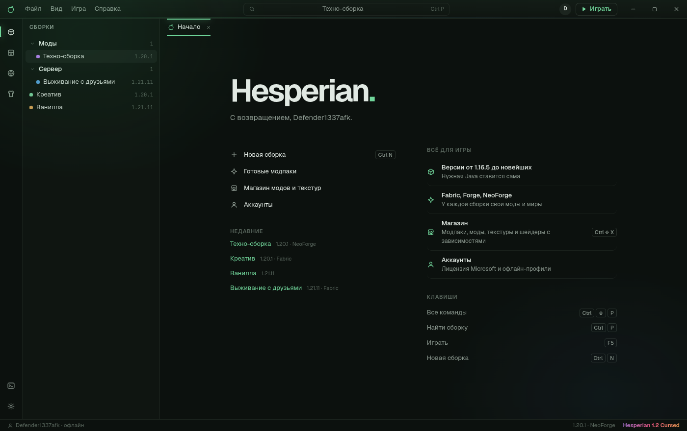
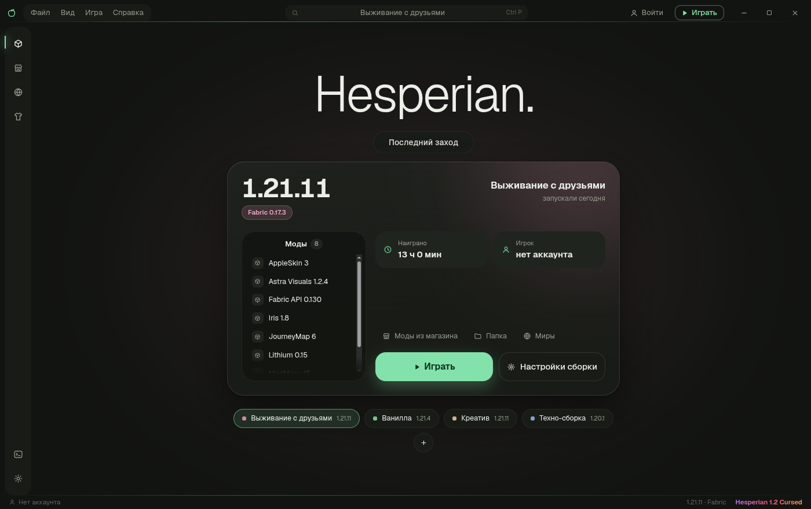
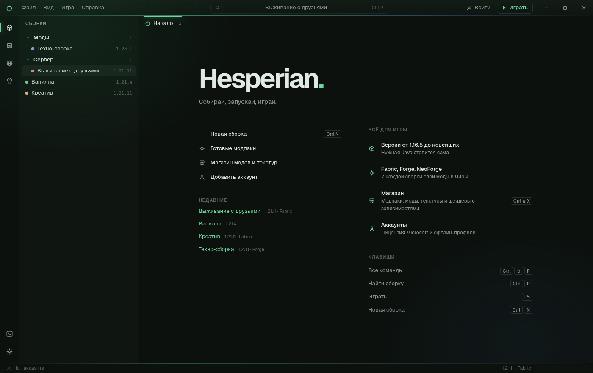
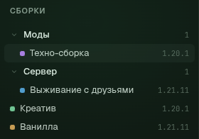
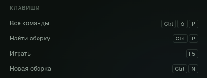
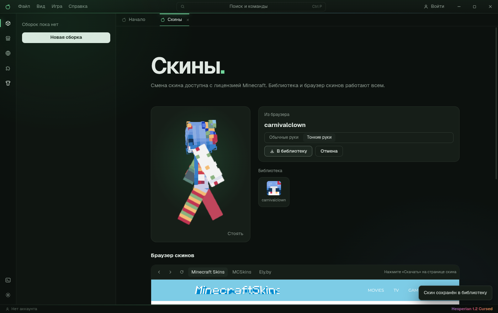
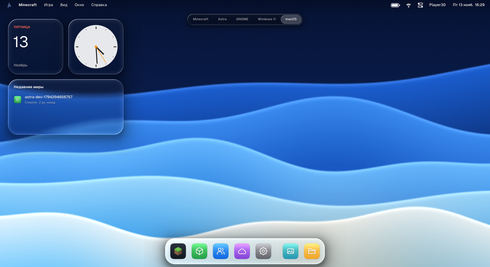
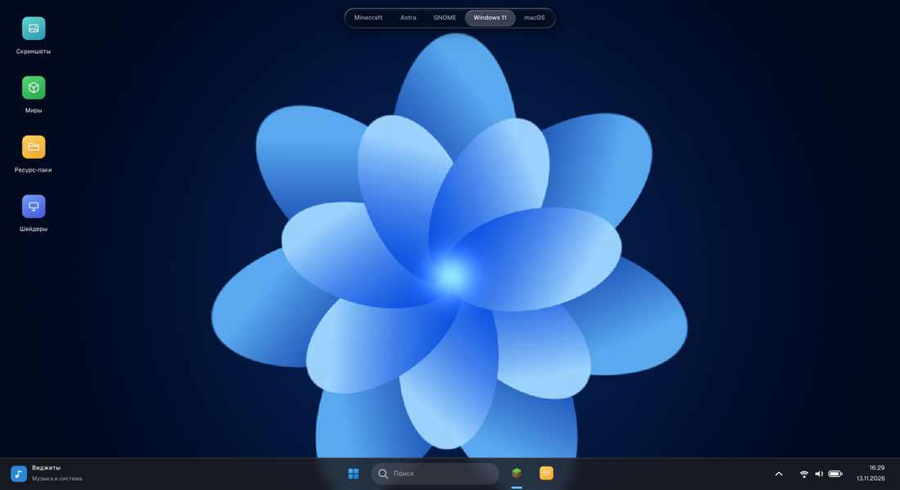
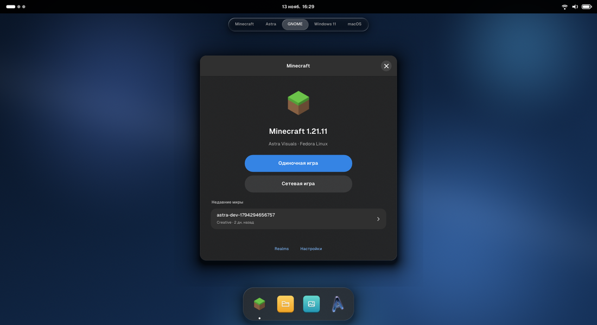

Hesperian
Лаунчер Minecraft для Windows и Linux. Сборки, моды, статистика и скины в одном окне.

Legacy или New
Два интерфейса в одном лаунчере. Legacy плотный, как IDE. New с большой карточкой сборки, которая следит за курсором. Переключается в настройках.


Устроен как IDE
Дерево сборок, вкладки, палитра команд на Ctrl+Shift+P, темы и Big Picture на F11. Нужная Java ставится сама, а магазин Modrinth и CurseForge уже внутри.
- Vanilla
- Fabric
- Forge
- NeoForge
- от 1.16.5
- моды
- текстуры
- шейдеры
- модпаки
- .mrpack
- CurseForge
- обновления одной кнопкой
- Microsoft и офлайн


Новое в 1.3
Графики FPS и памяти у каждой сборки, проверка конфликтов модов до запуска, понятный разбор вылетов и фон из картинки, GIF или видео.
- CurseForge
- статистика
- конфликты модов
- разбор вылетов
- фон из GIF и видео
- перетаскивание файлов
- светлая и чёрная тема
- трей и ярлыки
- бэкап миров
- режим стримера
Скины в 3D
Превью, библиотека и встроенный браузер сайтов со скинами: скачал и поставил. С лицензией меняются скин и плащ.

Для слабых ПК
На время игры лаунчер выгружается из памяти, Java получает подобранную память, а «Ускорить сборку» ставит нужные моды.
- Sodium
- Lithium
- FerriteCore
- и другие
Astra
Визуальный клиент для Minecraft 1.21.11 и 26.2 на Fabric, версия 2.0. Ставится через свой Astra Loader: он сам скачает Minecraft, Fabric и Astra, войдёт в Microsoft и запустит игру. Меню на жидком стекле открывается на Right Shift.



- Мир
- Созвездия и падающие звёзды, северное сияние, своя погода, полная яркость, физика предметов, плавные чанки
- Косметика
- Шляпы, крылья, щупальца, плащи и наряды, нарисованные вручную, живая лягушка на голове, ауры и питомец
- Бой
- Свои хитбоксы, Таргет ESP и Target HUD, круги прыжка, счётчик тотемов, след удара
- Интерфейс
- Скорборд на стекле, плавный чат, просмотр шалкера, без тряски камеры, низкий огонь
- Инструменты
- Конфиги с кодом для друзей, авто-тотем, метки, свободный обзор, траектория снарядов, зум
- Главное меню
- macOS Tahoe, Windows 11, GNOME, Astra или обычный Minecraft
Скачать
- Windows Установщик Hesperian-Setup-1.3.4.exe
- Windows Портативный Hesperian-1.3.4-portable.exe
- Linux AppImage Hesperian-1.3.4-x86_64.AppImage
- Linux tar.gz Hesperian-1.3.4-x64.tar.gz
Windows 10/11 x64 или Linux x64, от 4 ГБ ОЗУ. Дальше лаунчер обновляется сам.